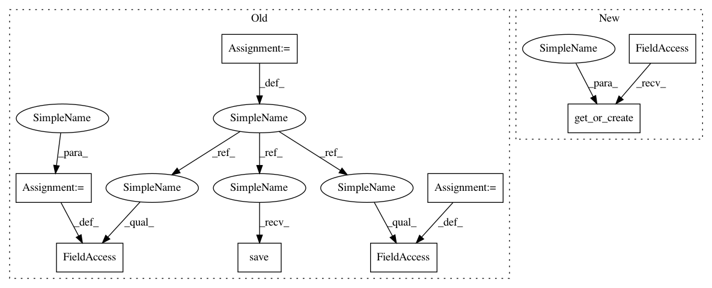

25e43f4024c41a3e97c9eb9ef1259fc6a85d405d,foreman/data_refinery_foreman/surveyor/external_source.py,ExternalSourceSurveyor,queue_downloader_jobs,#ExternalSourceSurveyor#Any#,44
Before Change
downloader_job.accession_code = experiment.accession_code
downloader_job.save()
asoc = DownloaderJobOriginalFileAssociation()
asoc.downloader_job = downloader_job
asoc.original_file = original_file
asoc.save()
download_urls_with_jobs[original_file.source_url] = downloader_job
try:
After Change
downloader_job.accession_code = experiment.accession_code
downloader_job.save()
asoc = DownloaderJobOriginalFileAssociation.objects.get_or_create(
downloader_job = downloader_job,
original_file = original_file
)[0]
download_urls_with_jobs[original_file.source_url] = downloader_job
In pattern: SUPERPATTERN
Frequency: 4
Non-data size: 8
Instances
Project Name: AlexsLemonade/refinebio
Commit Name: 25e43f4024c41a3e97c9eb9ef1259fc6a85d405d
Time: 2018-07-24
Author: miserlou@gmail.com
File Name: foreman/data_refinery_foreman/surveyor/external_source.py
Class Name: ExternalSourceSurveyor
Method Name: queue_downloader_jobs
Project Name: AlexsLemonade/refinebio
Commit Name: 25e43f4024c41a3e97c9eb9ef1259fc6a85d405d
Time: 2018-07-24
Author: miserlou@gmail.com
File Name: foreman/data_refinery_foreman/surveyor/external_source.py
Class Name: ExternalSourceSurveyor
Method Name: queue_downloader_job_for_original_files
Project Name: AlexsLemonade/refinebio
Commit Name: 5058dca810c613ba27217ed39b3528e100e20ea6
Time: 2018-07-24
Author: miserlou@gmail.com
File Name: foreman/data_refinery_foreman/surveyor/sra.py
Class Name: SraSurveyor
Method Name: _generate_experiment_and_samples
Project Name: AlexsLemonade/refinebio
Commit Name: 25e43f4024c41a3e97c9eb9ef1259fc6a85d405d
Time: 2018-07-24
Author: miserlou@gmail.com
File Name: foreman/data_refinery_foreman/surveyor/external_source.py
Class Name: ExternalSourceSurveyor
Method Name: queue_downloader_jobs
Project Name: AlexsLemonade/refinebio
Commit Name: 7636a32728d1d6205d4f6ceeea8e6f2d6967b81f
Time: 2018-06-06
Author: kurt.wheeler91@gmail.com
File Name: foreman/data_refinery_foreman/surveyor/geo.py
Class Name: GeoSurveyor
Method Name: create_experiment_and_samples_from_api